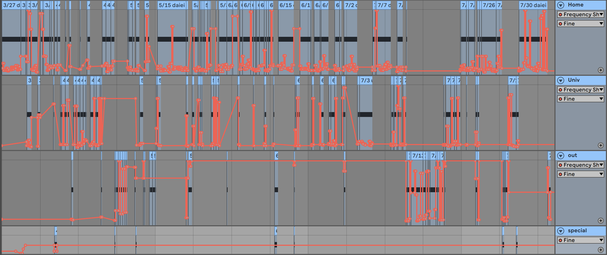
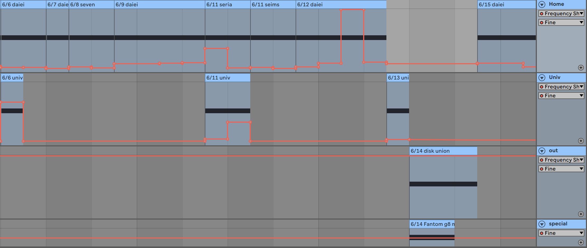

レシートの情報を音に置き換える事で自らの生活の可聴化を行う音の家計簿として作品を制作した。
生活の基盤となる家庭的な買い物（Home）、大学生活（Univ）、友人との外食などの生活の些細な幸福を作る買い物（out）、生活に大きく影響を与える買い物（special）、自身の生活を4種に分類し、それぞれに対応するトラックを制作した。

オーディオエフェクト [Frequency Shifter] の [Fine] にオートメーションを書いて、ある買い物の中で購入した商品の値段を音の周波数に対応させていった。
各音の配置は日付に対応させている。異なる購入シーンで同じ日にちの買い物についての音を同タイミングでスタートさせている。
音作りには TyrellN6 を使用している。